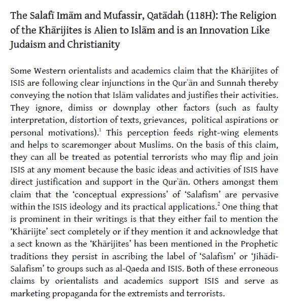

Kharijites.Com
Posted by Abu Iyaad on Monday, October, 10 2016 and filed under Salaf
Qatādah (118H) is a famous Qurʾanic commentator who studied with some of the Prophet’s Companions and also with the students of Ibn ʿAbbās), the greatest scholar of the Qurʾān. He said regarding the verse: “It is He who has sent down to you the Book; in it are verses [that are] precise - they are the foundation of the Book - and others unspecific. As for those in whose hearts is deviation [from truth], they will follow that of it which is unspecific, seeking discord and seeking an interpretation [suitable to them]. And no one knows its [true] interpretation except Allāh and those deeply-rooted in knowledge...” (3:7),
If they are not the Ḥarūrites [Khārijites] or the Sabaʾites, then I do not know who they are.
 Click the icon or this link to download and view the full article.
Click the icon or this link to download and view the full article.
